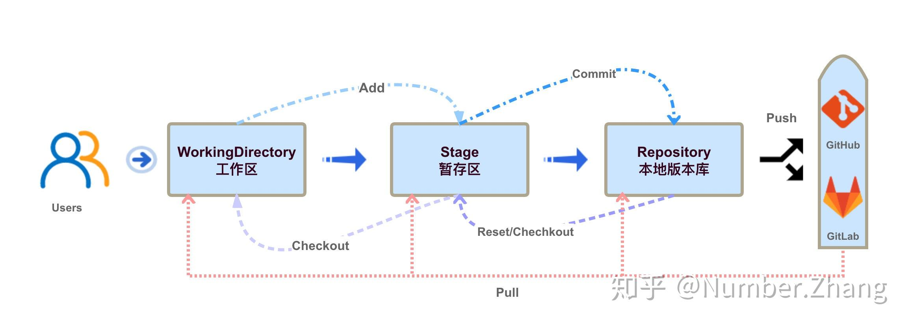

git
本文为 Git教程 - 廖雪峰的官方网站 (liaoxuefeng.com) 的学习笔记，仅供学习参考之用。
git 是一个版本管理工具，对于个人开发而言，一方面可以记录每次代码的更改，方便回溯代码定位问题；另一方面可以同时开发多个分支，可以更为安全的去折腾新功能。而对于团队开发而言，可以提升协同工作的效率，每个人基于一个共同的代码去开发各自的功能，然后逐步合并到主干分支，如果借助像 github、gitee 这样的网站，合并时代码可以 review，使得代码更加可靠，问题刚方便追溯。
安装
-
Linux
-
Windows
https://git-scm.com/downloads
安装完成之后进行配置：
git config 加了 --global 参数表示全局使用该项配置。
git 工作流程
在讲解 git 的基本使用之前，需要了解一下 git 的工作流程。

在本地文件中，我们创建好一个 git 仓库之后，会有两个区域的概念，分别是工作区和暂存区。你直接在文件中进行添加、修改、删除，只会直接影响工作区。当你使用 add 命令之后，会把文件添加到暂存区，这时这些文件被 git 记录，但还没有形成新的版本。等你这次代码修改结束了，需要将代码迭代至下一个版本时，使用 commit 命令进行提交，这样就在 .git 文件夹中生成了一个新的版本。
你可以使用 git log 来查看提交记录，对应的就是每一个提交的版本。如果你需要将版本提交至远程（github、gitee、gitlab），需要使用 push 命令。
过了一段时间，如果别人对这个代码做了新的迭代，你想要将这些变动同步到你的本地仓库，然后做进一步开发。那么你需要使用 pull 命令。但这时可能会产生代码冲突，因为你本地做了一些额外的修改，那么你需要根据实际情况去解冲突，然后才能继续开发。但一般只有你自己写这个代码时，不会发生冲突。
再假设一种情况，假如你现在对一个 file 文件做了某些更改，你想将它恢复原状，也就是还原。那么你需要根据不同的情况使用不同的命令：
- 如果你想将 file 恢复至暂存区的样子（你之前 add 了，但还没有 commit 的那部分），那么你需要用
git checkout -- file。 - 如果你想将 file 恢复至上一个版本（即上一个 commit 时的摸样），那么你需要使用
git reset HEAD file，其中 HEAD 特指上一个版本。注意，这样做会也恢复暂存区中的 file 文件。
以上就是 git 的基本工作流程
基本使用
-
使用
git init在一个文件夹内部创建 git 管理。目录下生成 .git 目录，该目录是隐藏的，可以使用ls -ah来查看。 -
使用
git add <file>来添加文件，并使用git commit -m ''来提交文件，其中单引号为本次提交添加注释。其中，如果要添加所有文件，可以使用git add -A或者git add .。 -
使用
git status来查看当前仓库的状态。可以看到哪些文件被 git 管理、哪些未被管理。另外还可以看到哪些文件做了添加、修改或者删除操作。 -
使用
git diff来查看修改文件的具体内容（相对于上一次 commit）。 -
使用
git log来查看提交日志，加上参数--pretty=oneline可以简洁化显示。 -
使用
git reset --hard HEAD^回退到上一个版本，回退到往上一百个版本需要改成HEAD-100。如需指定版本，使用git reset --hard xxxxx，xxxxx为版本号（可以只写部分前缀）。 -
使用
git reflog来查看命令历史。 -
git checkout -- file可以丢弃文件 file 在工作区的修改，如果暂存区有该文件，则回到暂存区的版本，如果暂存区没有，就回到和版本库一样的版本。 -
如果要将暂存区的版本也撤销掉，使用
git reset HEAD file，这样暂存区的内容回退到了工作区。 -
git rm file用来删除一个文件（工作区和暂存区都删除），如果删错了，也可以使用上面的checkout命令回退。如果是只删除暂存区，则使用git rm --cached file。
远程仓库
第一步需要在本地创建 SSH key 。一般存放在用户主目录的 .ssh 文件中，如果存在了 id_rsa 和 id_rsa.pub 文件，则可以跳过这一步。
ssh-keygen -t rsa -C "youremail@example.com"
然后将生成的 id_rsa.pub 文件里面的内容粘贴到远程仓库的里面（个人设置的公钥设置）
这样远程仓库就可以识别你的本地推送了。
然后在远程创建好 git 仓库，复制好 ssh 地址，类似于：git@github.com:michaelliao/learngit.git
在本地git 仓库文件夹下运行：
git remote add origin git@github.com:michaelliao/learngit.git
表示将该地址添加到名字为 origin 的remote 中。
然后使用 git push -u origin master ，将本地的master分支内容推送到远程新的master 分支，-u 参数是将本地的 master 分支与远程关联起来，方便以后操作。再之后的推送可以使用 git push origin master
关于本地仓库的远程库地址设置，可以使用 git remote -v 查看，如果需要修改，可以使用 git remote rm <name> 删除后重新添加。
git clone <address> 可以从远处克隆 git 仓库，GitHub给出的地址不止一个，实际上，Git支持多种协议，默认的git://使用ssh，但也可以使用https等其他协议。使用https除了速度慢以外，还有个最大的麻烦是每次推送都必须输入口令，但是在某些只开放http端口的公司内部就无法使用ssh协议而只能用https。
分支管理
使用命令 git checkout -b dev 创建一个 dev 分支，并切换到该分支。这是一个组合命令，实际上执行了：git branch dev 和 git checkout dev 。
使用 git branch 来查看所有分支以及当前所在的分支。
假设当前分支在 master，使用 git merge dev 可以合并 master 和 dev 分支。当合并方式是 Fast-forward 时，合并速度会非常快。
使用 git branch -d dev 可以删除 dev 分支。
因为创建、合并和删除分支非常快，所以Git鼓励你使用分支完成某个任务，合并后再删掉分支，这和直接在master分支上工作效果是一样的，但过程更安全。
在最新版本的 git 中，支持使用 git switch -c dev 来创建并切换到新的分支。使用 git switch dev 来切换分支。
当git 无法自动合并分支时，就必须先解决冲突。解决冲突后，再提交，合并完成。用git log --graph命令可以看到分支合并图。
如果要禁用 fast-forwad ，可以使用命令 git merge --no-ff -m "merge with no-ff" dev 来合并，这次合并将创建一个新的结点。
处理 bug
如果当前在 dev 分支上开发，然后正式版本中出了 bug 急需修复，但当前开发的内容还不能commit 到 dev 分支，那么可以先使用 git stash 来把工作现场储藏起来，等以后恢复现场继续工作。
git switch master
git switch -c issue-101
...
git add .
git commit -m 'fix'
git switch master
git merge --no-ff -m 'fix' issue-101
修好bug之后，切换到 git switch dev 继续开发。使用 git stash list 查看工作现场列表。
使用 git stash apply 来恢复，但内容并没有删除，还需要使用 git stash drop 来删除。
另一种是使用 git stash pop 来恢复，并删除。（跟栈 pop 类似）
使用 git stash list 查看之后，可以使用 git stash apply stash@{0} 来指定恢复。
更方便的是，使用 git cherry-pick <commit_id> 可以复制一个特定的提交到当前分支。作用是如果在 master 做了修复 bug 的改动，那么在 dev 分支上也需要做。